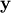
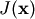
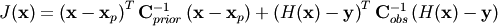

A synthetic experiment: simulating the performance of Sentinel-2¶
A useful application of the EOLDAS tools is to simulate how different sensors or combinations of sensors might be expected to work together. Simply, we could generate a set of artificial observations, acquired by a sensor (or sensors) from which the spectral, noise and orbital acquisition characteristics are known (or we can try different set ups to see their trade offs). We can then use EOLDAS to invert these synthetic observations and compare to the reality that went into them. This type of experiments can be very useful to test, for example, the usefulness of constellation concepts. The current example is a reduced version of the experiments that are presented in Lewis et al (2010), and show the use of EOLDAS in simulating ESA’s upcoming Sentinel-2 performance for the inversion of biophysical parameters. In this document, we try to reproduce the middle column in Figure 2 in Lewis et al (2010)
The experiment can be split into a set of simple tasks:
- We need to generate an appropriate set of observations. On the one hand, this requires
- An idea of typical angular sampling.
- An idea of the statistics of missing observations due to e.g. cloud.
- Trajectories for the land surface parameters.
Forward model the land surface parameters to land surface reflectance.
Add noise to the observations
Invert the observations, with whatever prior information might be available.
The first step will require the definition of a typical re-visit schedule for the sensor, as well as information on illumination geometries. We make use of the pyephem Python package to calculate the solar position at a given latitude and longitude. Some simple rules are given to model the sensor acquisition geometry (for example, the view zenith angle is assumed to be random). We can use full wavebands, or just the median wavelength of each band (the latter is far more efficient, and this solution can be used as a starting point to solve the full bandpass problem).
A further refinement is the inclusion of missing observations due to cloud cover, for example. It is typically observed that cloudiness is correlated in time, so a model of cloudiness that simulates the typical burst nature of cloud statistics is required. Another way to go about this is to use long term cloudiness observations, but we choose a very simple approach in this work.
The parameter trajectories are functions that describe the evolution of a given parameter in time. In this case, we choose to vary the following parameters:
- LAI
- Chlorophyll concentration
- Leaf water
- Leaf dry matter
- Number of leaf layers
- First soil component
This is an ambitious scenario: the analytic trajectories chosen for these parameters are smooth, but with very different degrees of smoothness. Some parameters are set to be constant (leaf layers and leaf dry matter). We will assume that the regulariser that solves this problem is identical for all the parameters, and constant in time. Even though we know that this is not the case, this simplifying assumption still allows the recovery of reasonable parameter estimates. Note that while in some cases (such as leaf area index) one might have mechanistic models that maybe use meteorological inputs to simulate photosynthesis and allocation of assimilated carbon to the leaves to estimate the amount of leaf area, for other parameters that have a significant impact on the remote sensing signal, these models might not be available.
The forward modelling of the parameter trajectories, coupled with the required wavebands and illumination geometries, produces a set of synthetic observations: this is what a sensor, operating with the given characteristics would “see”, in terms of surface reflectance. As with any measurement, noise needs to be incorporated. We do this by adding some Gaussian noise to the simulated reflectances, in line with what we expect to be typical values after atmospheric correction. Although we assume noise to be uncorrelated across bands, in practice it will be.
Finally, we solve the inverse problem: find the parameter trajectories given the set of noisy and incomplete observations. In reality, we also need to estimate the strength of the regularisation, a hyperparameter. In Lewis et al (2011) this is done using cross-validation. In the paper, we proceeded as follows:
Set a number of values that
 might take. This will necessarily be a large range (say from
might take. This will necessarily be a large range (say from  ), but prior experience might dictate a suitable interval.
), but prior experience might dictate a suitable interval.For one value of
...Select one single observation, and remove it from the observations that will go into the inversion
- Solve the inverse problem
- Predict the missing observation, and compare with the truth
Calculate a prediction metric, such as root mean square error (RMSE) or similar
Select the value of
that results in the most accurate predictions.
This method is clearly very time consuming, but can be carried out in
parallel. Note that the optimal value of will be
different if the nature of the problem (priors, order of the smoothness
constraint, etc) changes. We shall not concern ourselves with crossvalidaiton
here, and will use the optimal values from the paper.
For comparison purposes, we will also solve each observation independently, which is similar to what one would do in look-up table-based inversion approaches. In general, the problem of inverting six parameters from a single multispectral observation is incredibly ill-posed. The very informative sampling scheme of the MSI2 sensor however allows inversions. We shall also calculate the associated uncertainty of these single inversions, which we expect to be very high (and exhibit large degrees of correlation between parameters), and also note that when no observations are available, there will be no estimate of land surface parameters.
The next sections describe the python script that performs the experiment.
Anatomy of the simulation code¶
The code is organised in a single class, Sentinel. This class will perform all the above described tasks. The user might want to modify this class to perform other experiments. The class basically writes out files, and also runs the eoldas prototype as required. As mentioned above, we use the pyephem package to simulate the solar geometry.
Generating the synthetic observations¶
The code for this is fairly simple, and can be seen in the main function in sentinel.py:
s = Sentinel()
# generate parameter dataset
s.parameters(np.arange(1,366),'input/truth.dat')
# generate noise free observations (every 5 days)
s.fwdModel('input/truth.dat','input/sentinelClean.dat',every=5)
s.fwdModel('input/truth.dat','input/sentinelGapClean.dat',every=5,prop=0.5,WINDOW=5)
# add noise to the observations
s.addNoiseToObservations('input/sentinelClean.dat','input/sentinel.dat',nMag=1.0)
s.addNoiseToObservations('input/sentinelGapClean.dat','input/sentinelGap.dat',nMag=1.0)
We first instantiate the Sentinel class, calculate the parameter temporal trajectories using the Sentinel.parameters method. This requires a time axis as well as an output file (in this case, input/truth.dat. This file can also be used to compare inversion results etc.). Once the parameter trajectories have been established, we can forward model them to surface reflectance using the Sentinel.fwdModel method. This method has a number of options that are important to note:
- ifile
- input data (parameters) file
- ofile
- output reflectance data file
- lat
- latitude (default ‘50:0’) (see ephem)
- lon
- longitude (default ‘‘0:0’) (see ephem)
- year
- as int or string (default ‘2011’)
- maxVza
- maximum view zenith angle assumed (15 degrees default)
- minSD
- minimum noise
- maxSD
- maximum noise. The uncertainty in each waveband is scaled linearly with wavelength between minSD and maxSD
- fullBand
- set True if you want full band pass else False (default False). Note that its much slower to set this True.
- confFile
- configuration file (default config_files/sentinel0.conf). If this file doesnt exist, it will be generated from self.confTxt. If that doesn’t exist, self.generateConfTxt() is invoked to provide a default.
- every
- sample output every ‘every’ doys (default 5)
- prop
- proportion of clear sample days (default 1.0)
- WINDOW
- size of smoothing kernel to induce temporal correlation in data gaps if prop < 1
Note that some other settings (such as default parameter values, and which parameters will be varied temporally) are set in the class constructor. In this case, we run the forward model twice, to create two distinct datasets: a complete best-case scenario, and a second scenario where the missing observations (with a proportion of 0.5 missing observations). These two datafiles are “clean”, i.e., there’s no noise. The Sentinel.addNoiseToObservations adds Gaussian independent noise to the observations. The variance of the noise is estipulated in the header of the clean data file (a linear increase of uncertainty with wavelength).
Solving each data individually¶
This part of the code will solve for each observation individually:
assuming some prior knowledge, we solve for the weighted least squares
fit. Mathematically, this for each observation , we
minimise the functional , where  is the state tht describes that observation.
is the state tht describes that observation.

Solving for single observations is a very hard problem: there usually isn’t an unique solution as parameter compensate for each other, and the observational constraint does not have enough information to allow this. This is made even worse by additional noise. In consequence, the shape of is very flat over large areas, showing no strong preference for values of the state vector. As a first test, we can use the noise-free synthetic observations and invert them using some kind of gradient descent algorithm that minimises . To make it faster, we can start the gradient descent algorithm with the true values, and then calculate the Hessian and its inverse and look at uncertainties in retrieved parameters. This is quite instructive in its own right. A second test would be start the minimisation at some other point that it’s not the true state, and see how the solution compares. Finally, we’d want to invert each individual observation, taking into account the noise.
We test some of these ideas with the clean datasets (those that have had no noise added to them). We also plot the results using graphical methods Sentinel.crossPlot and Sentinel.paramPlot.
# solve for parameter estimate, using one date at a time
# e.g. test for clean data starting from the correct value
# This should work perfectly & go stright to the the solution
# So, this is a sanity check for the solver mainly, but it is also
# interesting to look at the distribution of uncertainties
# in the plot plots/sentinelClean1_pplot.png
# When we add noise, we expect the solution to lie somewhere in these bounds
# generally.
s.solveSingle('input/sentinelClean.dat','output/sentinelClean1.dat',initial='input/truth.dat')
s.crossPlot(s.loadData('input/truth.dat'),s.loadData('output/sentinelClean1.dat'),\
params,filename='plots/sentinelClean1_xplot.png')
s.paramPlot(s.loadData('input/truth.dat'),s.loadData('output/sentinelClean1.dat'),\
params,filename='plots/sentinelClean1_pplot.png')
# e.g. test for clean data not starting from the correct value
# Ideally, this would provide the same result, but that is unlikely
# as the cost function is quite flat around the minimum.
# But actually it does a pretty good job other than perhaps the
# first sample, which suggests that we need to reconsider
# starting positions if we can afford it (e.g. go through the
# series backwards as well)
s.solveSingle('input/sentinelClean.dat','output/sentinelClean2.dat')
s.crossPlot(s.loadData('input/truth.dat'),s.loadData('output/sentinelClean2.dat'),\
params,filename='plots/sentinelClean2_xplot.png')
s.paramPlot(s.loadData('input/truth.dat'),s.loadData('output/sentinelClean2.dat'),\
params,filename='plots/sentinelClean2_pplot.png')
# e.g. test normal, i.e. data with noise. This is now a realistic test
# of the solver for noisy data. We expect the result to be similar
# to the truth (mostly within the 90% CI)
# Again, this should do a pretty decent job
s.solveSingle('input/sentinel.dat','output/sentinel.dat')
s.crossPlot(s.loadData('input/truth.dat'),s.loadData('output/sentinel.dat'),\
params,filename='plots/sentinel_xplot.png')
s.paramPlot(s.loadData('input/truth.dat'),s.loadData('output/sentinel.dat'),\
params,filename='plots/sentinel_pplot.png')
s.solveSingle('input/sentinelGap.dat','output/sentinelGap.dat')
s.crossPlot(s.loadData('input/truth.dat'),s.loadData('output/sentinelGap.dat'),\
params,filename='plots/sentinelGap_xplot.png')
s.paramPlot(s.loadData('input/truth.dat'),s.loadData('output/sentinelGap.dat'),\
params,filename='plots/sentinelGap_pplot.png')

Inverting each individual observation (no noise) starting from the true solution. Left panel: (transformed) parameters and 95% CI Right panel: scatterplot of retrieved parameters vs true parameters.

Inverting each individual observation (no noise) not specifying the true solution. Left panel: (transformed) parameters and 95% CI Right panel: scatterplot of retrieved parameters vs true parameters.

Inverting each individual noisy observation starting from the true solution. Complete series. Left panel: (transformed) parameters and 95% CI Right panel: scatterplot of retrieved parameters vs true parameters.

Inverting each individual noisy observation starting from the true solution. Gappy series. Left panel: (transformed) parameters and 95% CI Right panel: scatterplot of retrieved parameters vs true parameters.
Solving using data assimilation¶
Finally, we can solve the problem using the DA framework. This is done using the Sentinel.solveRegular method. One way to speed up processing is to start the inversion with the results calculated above for the single observations.
# now, taking the result of the single inversion as the inital estimate (at the data points)
# try to solve for all time samples using regularisation
# If this takes some time, watch the world go by in the grpahs such as
# in output/sentinel_O_1_gamma_100_resul*.png
s.solveRegular('input/sentinel.dat','output/sentinel_O_1_gamma_150.dat',\
modelOrder=1,gamma=150,initial='output/sentinel.dat')
s.solveRegular('input/sentinelGap.dat','output/sentinelGap_O_1_gamma_150.dat',\
modelOrder=1,gamma=150,initial='output/sentinelGap.dat')
s.solveRegular('input/sentinel.dat','output/sentinel_O_2_gamma_530.dat',\
modelOrder=2,gamma=530,initial='output/sentinel.dat')
s.solveRegular('input/sentinelGap.dat','output/sentinelGap_O_2_gamma_530.dat',\
modelOrder=2,gamma=530,initial='output/sentinelGap.dat')
Note
Here we need to put the solution plots. However, it appears that
we might need new values?
Inverting each individual noisy observation starting from the true solution. Complete series. Left panel: (transformed) parameters and 95% CI Right panel: scatterplot of retrieved parameters vs true parameters.
Inverting each individual noisy observation starting from the true solution. Gappy series. Left panel: (transformed) parameters and 95% CI Right panel: scatterplot of retrieved parameters vs true parameters.